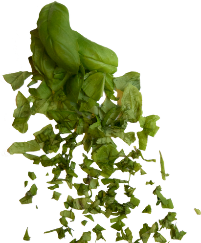

Your body is not a temple, it's an amusement park.
Enjoy the ride.
-Anthony Bourdain
At Greenhouse our goal is to bring inspiration and knowledge of the use of spices and herbs to your everyday cooking. We take pride in presenting different ingredients you can use to spice up your cooking in an educational way. Our combination of helping you to get to know the history and the common ways of using different herbs and spices accompanied by suggested recipes is guaranteed to broaden the ways you think about cooking and take the flavours to the next level.
